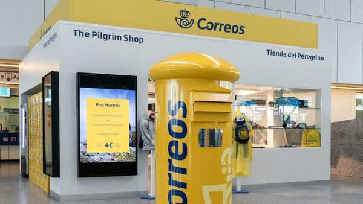
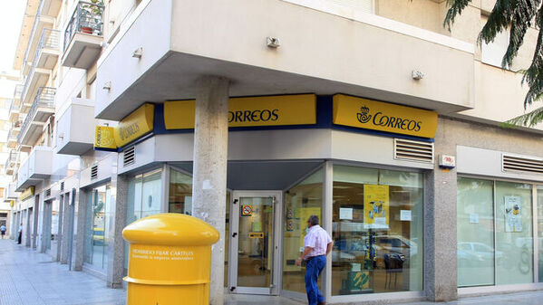

Es una empresa pública del Gobierno de España. La empresa forma parte del holding público Sociedad Estatal de Participaciones Industriales (SEPI), cuyas actividades se ajustan al ordenamiento jurídico privado. Es la mayor empresa pública existente en España, después de que en la década de los años 1980 y 1990 fuesen privatizadas el resto de grandes empresas públicas, tales como Iberia, Endesa, Telefónica, Argentaria, etc.
Estas frente a la nueva página web sobre formularios para recibir y enviar paquetes de Correos
Gracias a nuestros servicios no se te hará muy complicado encontrarnos por la red o en tu oficina de Correos más cercana
Debido a que tenemos ofídicas por toda España y cada día intentamos añadir más oficinas para la gente que vive fuera de las ciudades y pueden utilizar nuestros servicios
